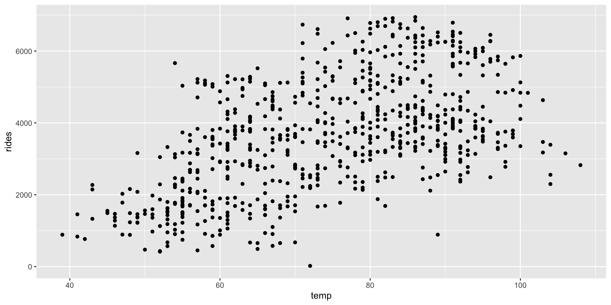
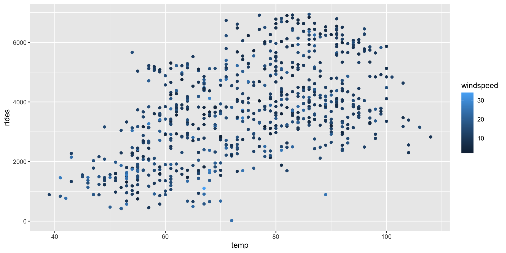
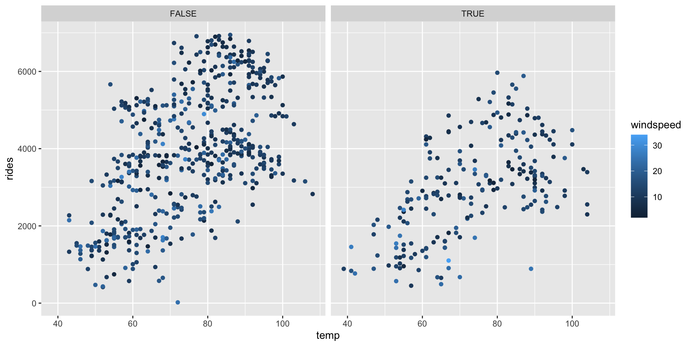
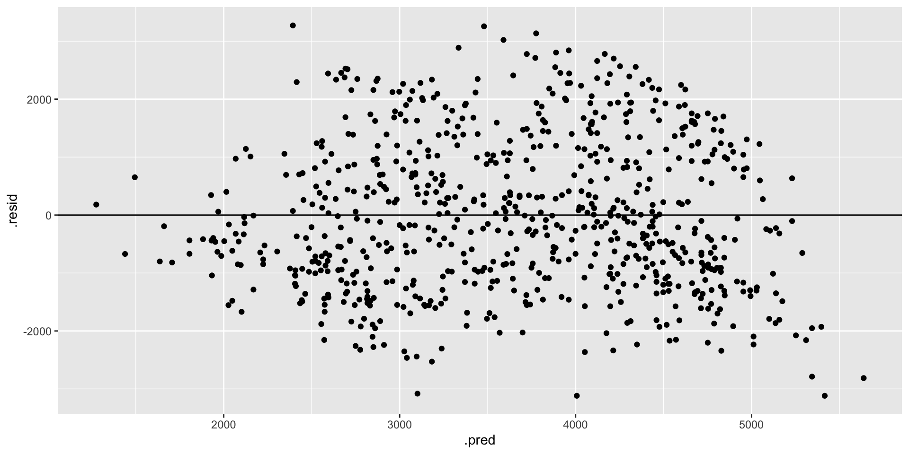
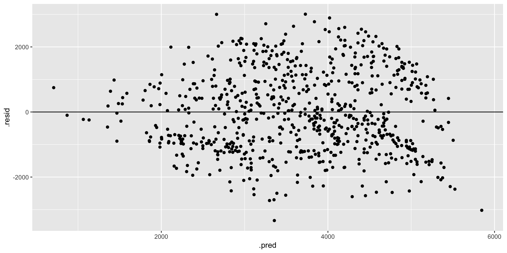
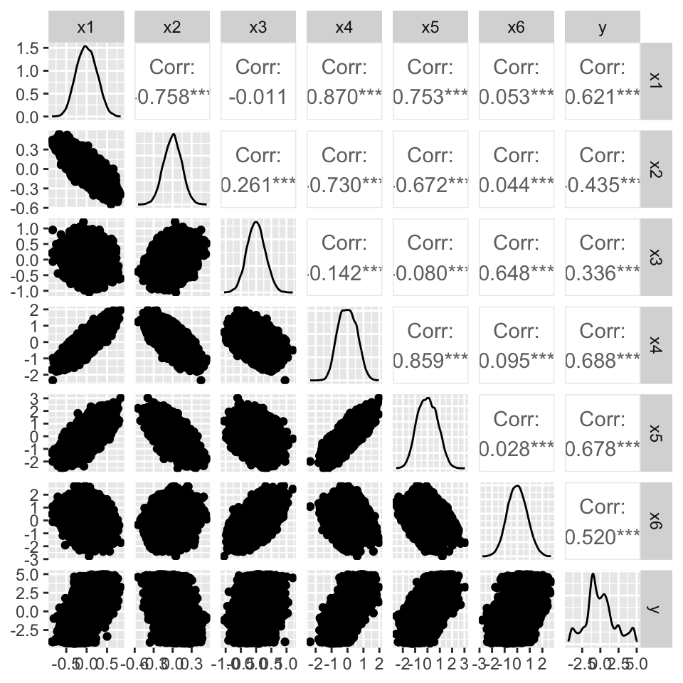
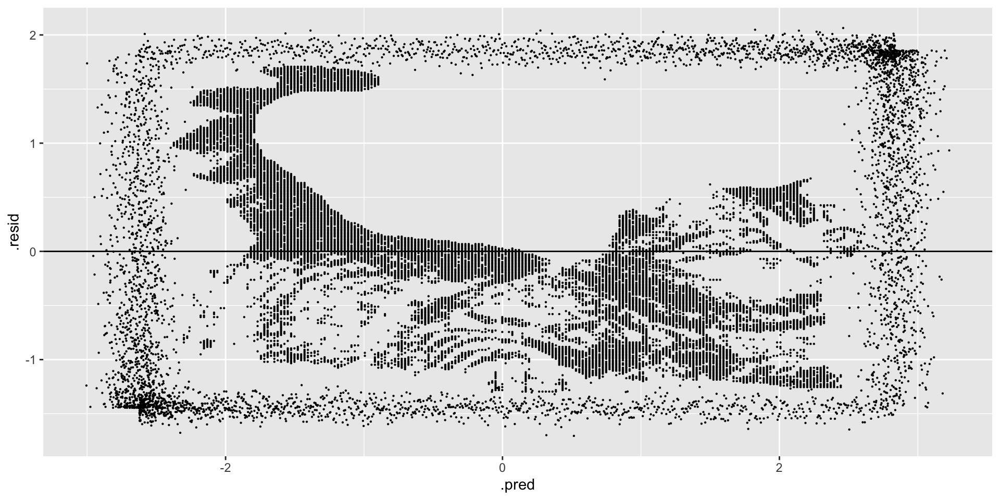
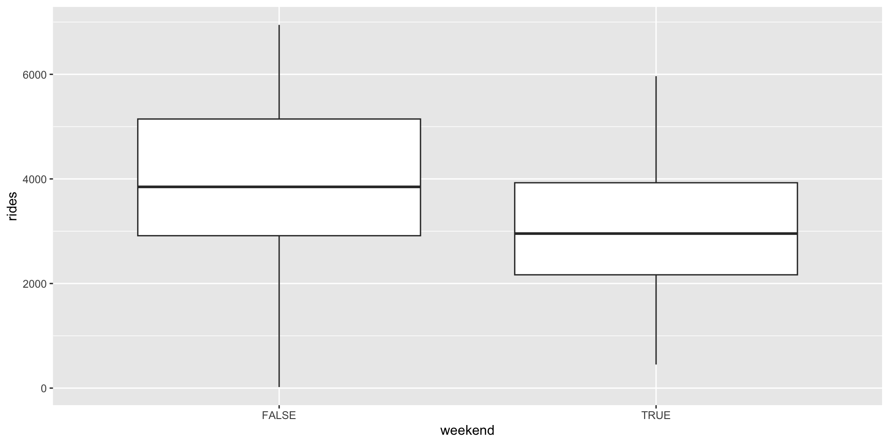
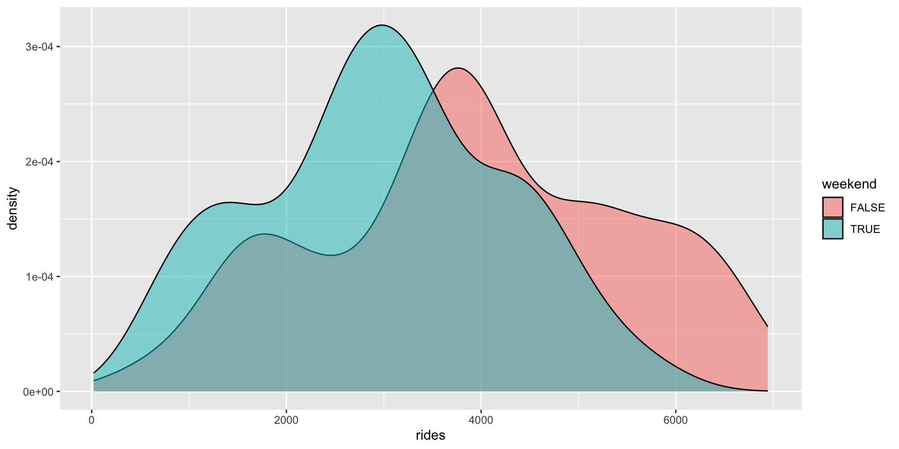
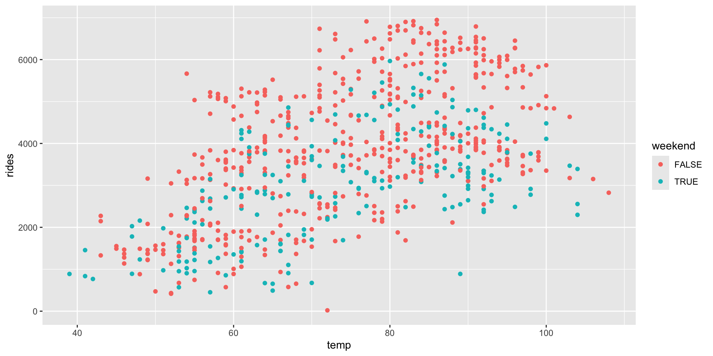

lm(y ~ x1 + x2, data = sample_data)2 Model Evaluation
Settling In
- Sit with at least 2 new people and introduce yourself
- Sign up for the MSCS Community Mailing List for information about MSCS-related events, internship opportunities, etc.
- Prepare to take notes:
- Download this Quarto Document
- Save this QMD in the “STAT 253 > Notes” folder you created for Checkpoint 1
Render(Knit) the QMD and check out the general structure- This is where you’ll take notes today! Use this however is best for your own learning — you won’t hand it in.
Learning Goals
- Practice building and evaluating linear regression models in RStudio. Specifically:
- Create and interpret residuals vs. fitted, residuals vs. predictor plots to identify improvements in modeling and address ethical concerns.
- Calculate and interpret MSE, RMSE, MAE, and R-squared in a contextually meaningful way.
- Review some STAT 155 concepts and RStudio tools.
- Start using the
tidymodelspackage to build and evaluate regression models. - Get used to the course workflow, e.g. taking notes.
Small Group Discussion
Directions
- In small groups, please first introduce yourself (in whatever way you feel appropriate) and check in with each other as human beings.
- When everyone is ready, glance through the summary of concepts covered in the video (see “Video Recap” below) and discuss the following prompts:
- What vocabulary or notation was new to you?
- What concepts were new to you?
- What concepts are still unclear to you at this moment?
- Prepare to share a few highlights from your group discussion with the entire class
Video Recap
We are in the regression setting. We want to build a model of some quantitative output variable \(y\) by some predictors \(x\):
\[y = f(x) + \epsilon\]
There are many regression tools that we might use to build this model. We’ll use a linear regression model which assumes that \(y\) is a linear combination of the \(x\)’s:
\[y = \beta_0 + \beta_1 x_1 + \beta_2 x_2 + \cdots \beta_p x_p + \epsilon\]
After building any model, it’s important to evaluate it: Is our regression model a “good” model?
- Is the model wrong?
- Is the model strong?
- Does the model produce accurate predictions?
- Is the model fair?
We will review these concepts through today’s exercises. A detailed overview is provided in the “Motivating Question” section under “Regression: Model Evaluation (Unit 1)” on the course website.
Notes: R Code
Intro to tidymodels
Throughout the semester, we are going to use the tidymodels package in R.
- Similar flavor to tidyverse structure
- More general structure that allows us to fit many other types of models
. . .
At first, it will seem like a lot more code (perhaps even unnecessarily so).
. . .
For example, what you did in STAT 155 with
. . .
will now look like
# STEP 1: model specification
lm_spec <- linear_reg() %>% # we want a linear regression model
set_mode("regression") %>% # this is a regression task (y is quantitative)
set_engine("lm")# we'll estimate the model using the lm function
# STEP 2: model estimation
model_estimate <- lm_spec %>%
fit(y ~ x1 + x2, data = sample_data)But you’ll need to trust me…
Highlight: Useful Model Evaluation Functions
A few useful functions to use on model_estimate:
. . .
model_estimate %>%
tidy() #gives you coefficients (and se, t-statistics). . .
model_estimate %>%
augment(new_data = sample_data) # gives you predictions and residuals for sample_data. . .
model_estimate %>%
glance() #gives you some model evaluation metrics (is it strong?). . .
model_estimate %>%
augment(new_data = sample_data) %>%
mae(truth = y, estimate = .pred) # calculates MAE to measure accuracy of predictions. . .
More info, for future reference, below!
Future Reference: R Code for Building and Evaluating Regression Models
This section is for future reference. It is a summary of code you’ll learn below for building and evaluating regression models. Throughout, suppose we wish to build and evaluate a linear regression model of y vs x1 and x2 using our sample_data.
# Load packages
library(tidyverse)
library(tidymodels)Building a linear regression model
# STEP 1: specify the type of model to build
lm_spec <- linear_reg() %>% # we want a linear regression model
set_mode("regression") %>% # this is a regression task (y is quantitative)
set_engine("lm") # we'll estimate the model using the lm function
# STEP 2: estimate the specified model using sample data
model_estimate <- lm_spec %>%
fit(y ~ x1 + x2, data = sample_data)
# Get the model coefficients
model_estimate %>%
tidy()Obtaining predictions (& residuals) for each observation
# Obtain y predictions and residuals for each observation in our sample_data
# (We can replace sample_data with any data frame that includes y, x1, and x2)
model_estimate %>%
augment(new_data = sample_data)
# Obtain y predictions (but not residuals) for some given x1, x2 values, when we haven't yet observed y
# (We can replace the data.frame with any data frame that includes x1 and x2)
model_estimate %>%
augment(new_data = data.frame(x1 = ___, x2 = ___))
# Another approach using predict()
model_estimate %>%
predict(new_data = data.frame(x1 = ___, x2 = ___))Evaluating the model
# Is it strong? (R^2)
model_estimate %>%
glance()
# Does it produce accurate predictions? (MAE)
model_estimate %>%
augment(new_data = sample_data) %>%
mae(truth = y, estimate = .pred)
# Is it wrong? (residual plot)
model_estimate %>%
augment(new_data = sample_data) %>%
ggplot(aes(x = .pred, y = .resid)) +
geom_point() +
geom_hline(yintercept = 0)Exercises
Instructions
- Work through these exercises as a group, talking through your ideas, questions, and reasoning as you go and taking notes in your QMD
- Be kind to yourself/each other! You will be rusty and make mistakes, and that’s ok! Mistakes are important to learning.
- Focus on patterns in code. Review, but do not try to memorize any provided code. Focus on the general steps and patterns.
- If you’re given some starter code with blanks (e.g. below), don’t type in those chunks. Instead, copy, paste, and modify the starter code in the chunk below it.
# Start small: rides vs temp
ggplot(___, aes(y = ___, x = ___)) +
geom___()- Ask questions! We will not have time to discuss all exercises at the end of class. Talk through your questions as a group, and ask me questions as I walk around the room!
- Collaborate. We’re sitting in groups for a reason. Collaboration improves higher-level thinking, confidence, communication, community, and more. I expect you to:
- Actively contribute to discussion (don’t work on your own)
- Actively include all group members in discussion
- Create a space where others feel comfortable making mistakes & sharing their ideas (remember that we all come to this class with different experiences, both personal and academic)
- Stay in sync while respecting that everybody has different learning strategies, work styles, note taking strategies, etc. If some people are working on exercise 10 and others are on exercise 2, that’s probably not a good collaboration.
- Don’t rush. You won’t hand anything in and can finish up outside of class.
Questions
Capital Bikeshare provides a bike-sharing service in the Washington DC area. Customers can pick up and drop off bikes at any station around the city. Of primary interest to the company is:
How many registered riders can we expect today?
To this end, you will build, evaluate, and compare 2 different linear regression models of ridership using the following Capital Bikeshare dataset (originally from the UCI Machine Learning Repository):
# Load packages we'll need to wrangle and plot the data
library(tidyverse)
# Load the data
bikes <- read.csv("https://mac-stat.github.io/data/bike_share.csv")
# Only keep / select some variables
# And round some variables (just for our demo purposes)
bikes <- bikes %>%
rename(rides = riders_registered, temp = temp_feel) %>%
mutate(windspeed = round(windspeed), temp = round(temp)) %>%
select(rides, windspeed, temp, weekend)# Check out the dimensions
dim(bikes)
# Check out the first 3 rows
head(bikes, 3)This dataset contains the following information for a sample of different dates:
| variable | description |
|---|---|
| rides | count of daily rides by registered users |
| windspeed | wind speed in miles per hour |
| temp | what the temperature feels like in degrees Fahrenheit |
| weekend | whether or not it falls on a weekend |
We’ll consider two linear regression models of ridership:
rides ~ windspeed + temp and rides ~ windspeed + temp + weekend
- Plot the relationships. First, let’s plot these relationships. REMINDER: Don’t write in any chunk with starter code. Copy, paste, and modify the code in the chunk below it.
# Start small: rides vs temp
ggplot(___, aes(y = ___, x = ___)) +
geom___()# rides vs temp & windspeed
ggplot(bikes, aes(y = ___, x = ___, ___ = windspeed)) +
geom_point()# rides vs temp & windspeed & weekend
ggplot(bikes, aes(y = ___, x = ___, ___ = windspeed)) +
geom_point() +
facet_wrap(~ ___)Solution
# Start small: rides vs temp
ggplot(bikes, aes(y = rides, x = temp)) +
geom_point()
# rides vs temp & windspeed
ggplot(bikes, aes(y = rides, x = temp, color = windspeed)) +
geom_point()
# rides vs temp & windspeed & weekend
ggplot(bikes, aes(y = rides, x = temp, color = windspeed)) +
geom_point() +
facet_wrap(~ weekend)
- tidymodels STEP 1: model specification. We’ll build and evaluate our two models of ridership using the tidymodels package. This code is more complicated than the
lm()function we used in STAT 155. BUT:
- tidymodels is part of the broader tidyverse (what we use to plot and wrangle data), thus the syntax is more consistent
- tidymodels generalizes to the other ML algorithms we’ll survey in this course, thus will eventually minimize the unique syntax we need to learn
# Load package
library(tidymodels)The first step is to specify what type of model we want to build. We’ll store this as lm_spec, our linear regression model (lm) specification (spec).
lm_spec <- linear_reg() %>% # we want a linear regression model
set_mode("regression") %>% # this is a regression task (y is quantitative)
set_engine("lm")# we'll estimate the model using the lm functionThis code specifies but doesn’t build any model – we didn’t even give it any data or specify the variables of interest!
# Check it out
lm_specSolution
# Load package
library(tidymodels)
lm_spec <- linear_reg() %>% # we want a linear regression model
set_mode("regression") %>% # this is a regression task (y is quantitative)
set_engine("lm")# we'll estimate the model using the lm function
lm_specLinear Regression Model Specification (regression)
Computational engine: lm - tidymodels STEP 2: model estimation. We can now estimate or
fitour two ridership models using the specified model structure (lm_spec) and our samplebikesdata:
# Fit bike_model_1
bike_model_1 <- lm_spec %>%
fit(rides ~ windspeed + temp, data = bikes)
# Check out the coefficients
bike_model_1 %>%
tidy()# YOUR TURN
# Fit bike_model_2 & check out the coefficientsSolution
bike_model_1 <- lm_spec %>%
fit(rides ~ windspeed + temp, data = bikes)
bike_model_2 <- lm_spec %>%
fit(rides ~ windspeed + temp + weekend, data = bikes)
# Check out the results:
bike_model_1 %>%
tidy()# A tibble: 3 × 5
term estimate std.error statistic p.value
<chr> <dbl> <dbl> <dbl> <dbl>
1 (Intercept) -20.8 300. -0.0694 9.45e- 1
2 windspeed -36.1 9.42 -3.83 1.37e- 4
3 temp 55.4 3.33 16.6 7.58e-53bike_model_2 %>%
tidy()# A tibble: 4 × 5
term estimate std.error statistic p.value
<chr> <dbl> <dbl> <dbl> <dbl>
1 (Intercept) 298. 289. 1.03 3.02e- 1
2 windspeed -35.6 9.00 -3.95 8.46e- 5
3 temp 54.3 3.18 17.1 3.82e-55
4 weekendTRUE -858. 101. -8.46 1.47e-16- Is it fair? Now, let’s evaluate our two models. First, do you have any concerns about the context in which the data were collected and analyzed? About the potential impact of this analysis?
Solution
What do you think?
- Who might be harmed?
- Who benefits?
- Is it strong? We can measure and compare the strength of these models using \(R^2\), the proportion of variability in our response variable that’s explained by the model. Report which model is stronger and interpret its \(R^2\).
# Obtain R^2 for bike_model_1
bike_model_1 %>%
glance()# YOUR TURN
# Obtain R^2 for bike_model_2Solution
Model 2 is stronger than model 1 (\(R^2\) of 0.372 vs 0.310). But it only explains 37% of the variability in ridership from day to day.
# Obtain R^2 for bike_model_1
bike_model_1 %>%
glance()# A tibble: 1 × 12
r.squared adj.r.squared sigma statistic p.value df logLik AIC BIC
<dbl> <dbl> <dbl> <dbl> <dbl> <dbl> <dbl> <dbl> <dbl>
1 0.310 0.308 1298. 163. 2.44e-59 2 -6276. 12560. 12578.
# ℹ 3 more variables: deviance <dbl>, df.residual <int>, nobs <int>bike_model_2 %>%
glance()# A tibble: 1 × 12
r.squared adj.r.squared sigma statistic p.value df logLik AIC BIC
<dbl> <dbl> <dbl> <dbl> <dbl> <dbl> <dbl> <dbl> <dbl>
1 0.372 0.369 1239. 143. 5.82e-73 3 -6242. 12493. 12516.
# ℹ 3 more variables: deviance <dbl>, df.residual <int>, nobs <int>- Pause: get the residuals and predictions. Our next model evaluation questions will focus on the models’ predictions and prediction errors, or residuals. We can obtain this information by augmenting our models with our original
bikesdata. For example:
# Calculate predicted ridership (.pred) & corresponding residuals (.resid) using bike_model_1
# Just look at first 6 days
bike_model_1 %>%
augment(new_data = bikes) %>%
head()We can also predict outcomes for new observations using either augment() or predict(). Note the difference in the output:
# Predict ridership on a 60 degree day with 20 mph winds
bike_model_1 %>%
augment(new_data = data.frame(windspeed = 20, temp = 60))# Predict ridership on a 60 degree day with 20 mph winds
bike_model_1 %>%
predict(new_data = data.frame(windspeed = 20, temp = 60))Solution
augment() gives the predictions and residuals for all rows in the data. predict() only gives you predictions.
# Obtain the predictions & residuals using bike_model_1
bike_model_1 %>%
augment(new_data = bikes) %>%
head()# A tibble: 6 × 6
.pred .resid rides windspeed temp weekend
<dbl> <dbl> <int> <dbl> <dbl> <lgl>
1 3183. -2529. 654 11 65 TRUE
2 2911. -2241. 670 17 64 TRUE
3 2080. -851. 1229 17 49 FALSE
4 2407. -953. 1454 11 51 FALSE
5 2446. -928. 1518 13 53 FALSE
6 2699. -1181. 1518 6 53 FALSE # Predict ridership on a 60 degree day with 20 mph winds
bike_model_1 %>%
augment(new_data = data.frame(windspeed = 20, temp = 60))# A tibble: 1 × 3
.pred windspeed temp
<dbl> <dbl> <dbl>
1 2581. 20 60# Predict ridership on a 60 degree day with 20 mph winds
bike_model_1 %>%
predict(new_data = data.frame(windspeed = 20, temp = 60))# A tibble: 1 × 1
.pred
<dbl>
1 2581.- Does it produce accurate predictions? Recall that the mean absolute error (MAE) measures the typical prediction error. Specifically, it is the mean of the absolute values of the residual errors for the days in our dataset.
- Use the residuals to calculate the MAE for the 2 models. HINT:
abs().
# MAE for bike_model_1
bike_model_1 %>%
augment(new_data = bikes) %>%
summarize(mae = ___(___(___)))
# MAE for bike_model_2
bike_model_2 %>%
augment(new_data = bikes) %>%
summarize(mae = ___(___(___)))- Doing the calculation from scratch helps solidify your understanding of how MAE is calculated, thus interpreted. Check your calculations using a shortcut function.
# Calculate MAE for the first model
bike_model_1 %>%
augment(new_data = bikes) %>%
mae(truth = rides, estimate = .pred)# YOUR TURN
# Calculate MAE for the second model- Which model has more accurate predictions? Interpret the MAE for this model and comment on whether it’s “large” or “small”. NOTE: “large” or “small” is defined by the context (e.g. relative to the observed range of ridership, the consequences of a bad prediction, etc).
Solution
On average, the model 1 predictions are off by ~1080 riders and the model 2 predictions are off by ~1038 riders. Is this a lot? Consider this error relative to the scale of the data: there are roughly 1000 - 7000 riders per day.
# a
bike_model_1 %>%
augment(new_data = bikes) %>%
summarize(mae = mean(abs(.resid)))# A tibble: 1 × 1
mae
<dbl>
1 1080.bike_model_2 %>%
augment(new_data = bikes) %>%
summarize(mae = mean(abs(.resid)))# A tibble: 1 × 1
mae
<dbl>
1 1038.# b
bike_model_1 %>%
augment(new_data = bikes) %>%
mae(truth = rides, estimate = .pred)# A tibble: 1 × 3
.metric .estimator .estimate
<chr> <chr> <dbl>
1 mae standard 1080.bike_model_2 %>%
augment(new_data = bikes) %>%
mae(truth = rides, estimate = .pred)# A tibble: 1 × 3
.metric .estimator .estimate
<chr> <chr> <dbl>
1 mae standard 1038.- Is it wrong? To determine whether the linear regression assumptions behind
bike_model_1andbike_model_2are reasonable, we can review residual plots, i.e. plots of the residuals vs predictions for each observation in our dataset. Run the code below and summarize your assessment of whether our models are wrong. RECALL: We want the appoints to appear random and centered around 0 across the entire range of the model / predictions.
# Residual plot for bike_model_1
bike_model_1 %>%
augment(new_data = bikes) %>%
ggplot(aes(x = .pred, y = .resid)) +
geom_point() +
geom_hline(yintercept = 0)# YOUR TURN
# Residual plot for bike_model_2Solution
Both models look roughly “right” BUT there is a little downward slope at the extreme end of the residual plots. This corresponds to the observed phenomenon that when it’s really hot, ridership starts dipping. In a future model, we might incorporate a quadratic temperature term.
# Residual plot for bike_model_1
bike_model_1 %>%
augment(new_data = bikes) %>%
ggplot(aes(x = .pred, y = .resid)) +
geom_point() +
geom_hline(yintercept = 0)
# Residual plot for bike_model_2
bike_model_2 %>%
augment(new_data = bikes) %>%
ggplot(aes(x = .pred, y = .resid)) +
geom_point() +
geom_hline(yintercept = 0)
- Art vs science Inspecting residual plots is more art than science.1 It requires a lot of practice. Consider another example using simulated data. First, build a model that assumes all predictors are roughly linearly related:
# Import data
simulated_data <- read.csv("https://ajohns24.github.io/data/simulated_data.csv")
# Model y by the 6 input variables
new_model <- lm_spec %>%
fit(y ~ x1 + x2 + x3 + x4 + x5 + x6, simulated_data)Next, check out a pairs plot. Is there anything here that makes you think that our model assumption is bad?
library(GGally)
ggpairs(simulated_data)
Finally, check out a residual plot. Any concerns now?
new_model %>%
___(new_data = ___) %>%
ggplot(aes(x = ___, y = ___)) +
geom_point(size = 0.1) +
geom_hline(yintercept = 0)Solution
Art + Science!
new_model %>%
augment(new_data = simulated_data) %>%
ggplot(aes(x = .pred, y = .resid)) +
geom_point(size = 0.1) +
geom_hline(yintercept = 0)
- Details: communication & code style Communication is a key machine learning skill, including written summaries, presentations, and code. Just like an essay, code must have structure, signposts, and grammar that will make it easier for others to follow. The below code runs, but it is “bad code”.
- Fix this code and add comments so that it is easier for yourself and others to follow.
- Also pay attention to what this code does.
bikes%>%group_by(weekend)%>%summarize(median(rides))
mynewdatasetissmallerthantheoriginal<-bikes%>%filter(rides<=700,weekend==FALSE,temp>60)
mynewdatasetissmallerthantheoriginal
mynewdatasetusescelsius<-bikes%>%mutate(temp=(temp-32)*5/9)
head(mynewdatasetusescelsius)Solution
# Calculate the median ridership by weekend
# Put each new thought or action on its own line!
# This makes it easier to follow the steps.
bikes %>%
group_by(weekend) %>%
summarize(median(rides))# A tibble: 2 × 2
weekend `median(rides)`
<lgl> <dbl>
1 FALSE 3848
2 TRUE 2955# Obtain days on which there are at most 700 rides,
# it's the weekend, and temps are above 60 degrees
# Use a shorter name that's easier to read and type.
# Add spaces to make things easier to read.
# Add line breaks to make it easier to follow the steps.
warm_weekends <- bikes %>%
filter(rides <= 700, weekend == FALSE, temp > 60)
warm_weekends rides windspeed temp weekend
1 577 18 67 FALSE
2 655 18 68 FALSE
3 20 24 72 FALSE# Store temp in Celsius
bikes_celsius <- bikes %>%
mutate(temp = (temp - 32)*5/9)
head(bikes_celsius) rides windspeed temp weekend
1 654 11 18.333333 TRUE
2 670 17 17.777778 TRUE
3 1229 17 9.444444 FALSE
4 1454 11 10.555556 FALSE
5 1518 13 11.666667 FALSE
6 1518 6 11.666667 FALSE- STAT 155 Review: model interpretation & application Let’s interpret and apply
bike_model_2.
___ %>%
tidy()- How can we interpret the
tempcoefficient?
- We expect roughly 54 more riders on warm days.
- We expect roughly 54 more riders per every 1 degree increase in temperature.
- When controlling for windspeed and weekend status, we expect roughly 54 more riders on warm days.
- When controlling for windspeed and weekend status, we expect roughly 54 more riders per every 1 degree increase in temperature.
- How can we interpret the
weekendTRUEcoefficient?
- We expect roughly 858 fewer riders on weekends.
- We expect roughly 858 fewer riders per every extra weekend.
- When controlling for windspeed and temperature, we expect roughly 858 fewer riders on weekends.
- When controlling for windspeed and temperature, we expect roughly 858 fewer riders per every extra weekend.
- Reproduce the predicted ridership and corresponding residual for day 1 from scratch (how were these calculated?!):
bike_model_2 %>%
___(new_data = bikes) %>%
head(1)Solution
# Get the coefficients
bike_model_2 %>%
tidy()# A tibble: 4 × 5
term estimate std.error statistic p.value
<chr> <dbl> <dbl> <dbl> <dbl>
1 (Intercept) 298. 289. 1.03 3.02e- 1
2 windspeed -35.6 9.00 -3.95 8.46e- 5
3 temp 54.3 3.18 17.1 3.82e-55
4 weekendTRUE -858. 101. -8.46 1.47e-16- When controlling for windspeed and weekend status, we expect roughly 54 more riders per every 1 degree increase in temperature.
- When controlling for windspeed and temperature, we expect roughly 858 fewer riders on weekends (compared to weekdays).
# Predict ridership on day 1
bike_model_2 %>%
augment(new_data = bikes) %>%
head(1)# A tibble: 1 × 6
.pred .resid rides windspeed temp weekend
<dbl> <dbl> <int> <dbl> <dbl> <lgl>
1 2581. -1927. 654 11 65 TRUE # This matches .pred
298.45 - 35.57*11 + 54.33*65 - 857.76*1[1] 2580.87# Calculate the residual (observed - predicted)
# This matches .resid
654 - 2580.87[1] -1926.87- STAT 155 Review: data wrangling Through the “Details: communication & code style” and elsewhere, you’ve reviewed the use of various
dplyrdata wrangling verbs:filter(),mutate(),summarize(),group_by(), andselect(). Use these to complete the following tasks.
- Calculate the mean temperature across all days in the data set.
- Calculate the mean temperature on weekends vs weekdays.
- Print out the 3 days with the highest temperatures. HINT:
arrange()orarrange(desc()) - Name and store a new data set which: - only includes the days that fall on a weekend and have temps below 80 degrees - has a new variable,
temp_above_freezing, which calculates how far the temperature is above (or below) freezing (32 degrees F) - only includes thewindspeed,temp, andtemp_above_freezingvariables.
Solution
# a
bikes %>%
summarize(mean(temp)) mean(temp)
1 74.69083# b
bikes %>%
group_by(weekend) %>%
summarize(mean(temp))# A tibble: 2 × 2
weekend `mean(temp)`
<lgl> <dbl>
1 FALSE 75.1
2 TRUE 73.7# c
bikes %>%
arrange(desc(temp)) %>%
head(3) rides windspeed temp weekend
1 2825 9 108 FALSE
2 3152 15 106 FALSE
3 2298 9 104 TRUE# d
new_data <- bikes %>%
filter(weekend == TRUE, temp < 80) %>%
mutate(temp_above_freezing = temp - 32) %>%
select(windspeed, temp, temp_above_freezing)
head(new_data) windspeed temp temp_above_freezing
1 11 65 33
2 17 64 32
3 18 47 15
4 24 42 10
5 11 54 22
6 13 53 21- STAT 155 Review: plots
Construct plots of the following relationships:
- rides vs temp
- rides vs weekend
- rides vs temp and weekend
Solution
# a. rides vs temp
ggplot(bikes, aes(y = rides, x = temp)) +
geom_point()# b. rides vs weekend
ggplot(bikes, aes(y = rides, x = weekend)) +
geom_boxplot()
ggplot(bikes, aes(x = rides, fill = weekend)) +
geom_density(alpha = 0.5)
# c. rides vs temp and weekend
ggplot(bikes, aes(y = rides, x = temp, color = weekend)) +
geom_point()
- Done!
- Knit/render your notes.
- Check the solutions on the course website.
- Get a head start on the wrap-up steps below.
Wrap-Up
- Finishing the activity:
- If you didn’t finish the activity, no problem! Be sure to complete the activity outside of class, review the solutions in the online manual, and ask any questions on Slack or in office hours.
- Re-organize and review your notes to help deepen your understanding, solidify your learning, and make homework go more smoothly!
- An R code video, posted under the pre-course materials for today’s class (see the “Schedule” page on this website), talks through the new
tidymodelscode. This video is OPTIONAL. Decide what’s right for you. - Set up Slack if you haven’t already. I’ll be posting announcements there from now on.
- Upcoming due dates:
- HW0 (STAT 155 Review): due Friday at 11:59 pm
- CP2: due 10 minutes before our next class
Stefanski, Leonard A. (2007). Residual (Sur)Realism. “The American Statistician,” 61, pp 163-177.↩︎